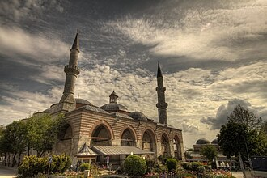

Presentazione
La Vieille Mosquée est une mosquée ottomane construite entre 1402 et 1414, située à Edirne, en Turquie.
الجامع القديم هو مسجد عثماني من أوائل القرن الخامس عشر يوجد في مدينة أدرنة ، تركيا، وكانت إدرنة هي عاصمة الدولة العثمانية قبل فتح القسطنطينية.
The Old Mosque, also known as Grand Mosque, is an early 15th-century Ottoman mosque in Edirne, Turkey.
Eski Cami, Türkiye'nin Edirne ilinin merkezinde yer alan cami. Edirne'de zamanımıza ulaşmış ilk orijinal abidevi yapı olarak da bilinir. Caminin yan kapısı üzerindeki kitâbeye göre mimarı Konyalı Hacı Alâaddin, kalfası ise Ömer ibn-i İbrahim'dir. Cami dokuz kubbelidir. Caminin, kuzey ve kuzeydoğu kısımlarında birer minaresi bulunur.
Masjid Eski Edirne, secara resmi bernama Masjid Raya Edirne adalah sebuah masjid bersejarah peninggalan Kesultanan Utsmaniyah pada abad ke-15 yang berada di kota Edirne, Provinsi Edirne, Turki. Masjid ini awalnya dibangun atas perintah Sultan Bayezid I, dan diselesaikan di bawah pemerintahan saudaranya, Sultan Mehmed I.
Die Alte Moschee ist ein osmanischer Moscheebau aus dem frühen 15. Jahrhundert in Edirne, Türkei. Zur Zeit ihrer Errichtung war Edirne Hauptstadt von Rumelien, dem europäischen Teil des Osmanischen Reichs. Der Bau gehört zu den ältesten erhaltenen Beispielen der frühen osmanischen Architektur auf dem Balkan. Ursprünglich die „Große“ oder „Freitagsmoschee“ genannt, erhielt sie ihren heutigen Namen nach der Fertigstellung der nahe gelegenen Üç-Şerefeli-Moschee.
La moschea vecchia è una moschea ottomana di Edirne, in Turchia. È situata nel centro storico della città, a poche centinaia di metri dalla moschea Selimiye.
A Mesquita Velha é uma mesquita otomana situada na cidade de Edirne, na Turquia. Foi construída no início do século XV.
エスキ・モスク は、トルコのエディルネにある15世紀初頭のオスマン帝国時代に建設されたモスクである。日本語で旧モスクと表記されることもある。
Старая мечеть — османская мечеть начала XV века в Эдирне, Турция.
Moscheea Veche din Edirne este o moschee din orașul Edirne, Turcia. Situată în centrul istoric al orașului, aceasta este una dintre cele mai importante atracții turistice alături de Moscheea Selimiye și de Moscheea Üç Șerefeli.
Sulla mappa
Documenti e link
- Wikipédia — Français
- Wikipédia — العربية
- Wikipédia — English
- Wikipédia — Türkçe
- Wikipédia — Bahasa Indonesia
- Wikipédia — اردو
- Wikipédia — Deutsch
- Wikipédia — Italiano
- Wikipédia — Português
- Wikipédia — 中文
- Wikipédia — 日本語
- Wikipédia — Русский
- Wikipédia — Română
- Wikidata — Q3307794
Dati: Wikidata (CC0), aggiornati ogni 3 mesi. L'anno è la data di costruzione conosciuta più antica dell'edificio: per un edificio diventato moschea in seguito (come Santa Sofia), è quella dell'edificio originario. Foto: Wikimedia Commons, autore e licenza nella pagina di ogni foto.